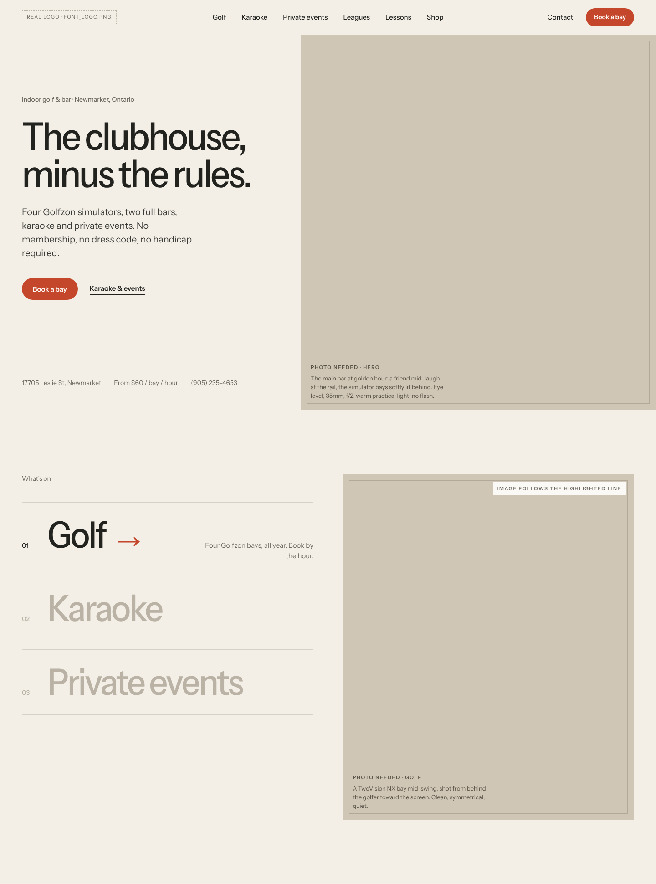
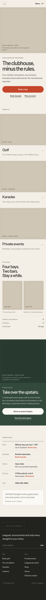

Every private club has a rulebook. Ours has one rule: have a good time. Open Membership borrows the calm confidence of a members' club (generous space, quiet type, real photography) and drops the gatekeeping. No membership, no dress code, no handicap required. The restraint is the attitude: nothing on the page is shouting, so the one red button does.


One variable family at three weights (400 / 500 / 600). Headlines are medium weight, sentence case, with tight tracking. No uppercase except 11px photo labels. It is free for commercial use (OFL) and self-hosts on WordPress. If you'd rather license a premium face, Neue Montreal or Suisse Int'l drop into the same system without changing the layout.
Every golf venue defaults to green on green. Here green is a supporting note (the private events room) and the only saturated colour is the red of a pin flag, the one thing every golfer aims at. It makes Book a bay unmissable without neon, and keeps the page light and breathable.
Flag red #C4462B
Recommended. Warmest, most decisive call to action.
Clubhouse ochre #A97C2F
Softer, more hospitality, less urgency.
Range blue #2F5D7C
Cooler, more apparel-brand, calmer.
Warm, natural and unposed. Shot at eye level on a 35–50mm lens, with the venue's own lights, shallow depth and people mid-moment rather than posing. No flash, no wide-angle distortion, no heavy filters. Graded slightly warm with true blacks. Photography carries the story, so no graphic decoration competes with it.